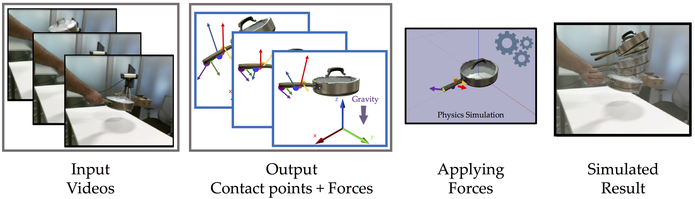

Use the Force Luke!
Learning to Predict Physical Forces by Simulating Effects
K Ehsani, S Tulsiani, S Gupta, A Farhadi, A Gupta (CVPR'20)

When we humans look at a video of human-object interaction, we can not only infer what is happening but we can even extract actionable information and imitate those interactions. On the other hand, current recognition or geometric approaches lack the physicality of action representation. In this paper, we take a step towards more physical understanding of actions. We address the problem of inferring contact points and the physical forces from videos of humans interacting with objects. One of the main challenges in tackling this problem is obtaining ground-truth labels for forces. We sidestep this problem by instead using a physics simulator for supervision. Specifically, we use a simulator to predict effects, and enforce that estimated forces must lead to same effect as depicted in the video.
Our quantitative and qualitative results show that:
- We can predict meaningful forces from videos whose effects lead to accurate imitation of the motions observe.
-
By jointly optimizing for contact point and force prediction, we can improve the performance on both tasks in comparison to independent training.
-
We can learn a representation from this model that generalizes to novel objects using few shot examples.